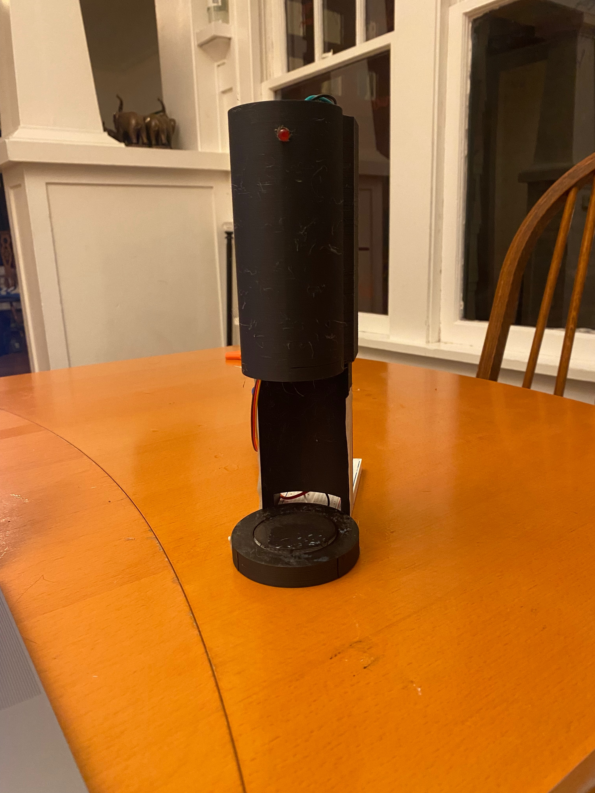

.jpeg)

The image left is a picture of my sun sip final project! Project description: This project is an automated water dispensing device designed to fill a cup only when specific environmental and user conditions are met. The system uses an Arduino microcontroller to monitor a photoresistor and a button-based cup detection mechanism. Water flow is controlled using a servo motor that actuates a valve. The system ensures water is dispensed only when a cup is present and the surrounding environment is sufficiently illuminated.

Here is the image of my schematic and above is an image of my circut out of an enclsure. BOM: Photoresistor, Red LED, button, arduino, servo, 3d printed enclosure, a plastic syringe. System Operation: The Arduino first reads the state of the button to determine whether a cup is present. If the button is pressed, the LED indicator turns on to notify the user that the system has detected the cup. The Arduino then reads the photoresistor value to determine the ambient brightness level. The program compares the light value to a predefined threshold that represents sufficient lighting. If both conditions are satisfied: A cup is present The room is sufficiently illuminated the servo rotates to the open position and allows water to flow. If either condition is not met, the servo returns to the closed position and the valve remains shut.
Here is my code for my sunsip project:
#include Servo.h
//create servo entity
Servo valveServo;
// sets pin 9 to control the servo
int servoPin = 9;
//sets button to pin 2
int buttonPin = 2;
//sets the photoresistor to A0
int lightSensorPin = A0;
//sets the led to pin 7
int ledPin = 7;
// light value starts by being set to 0 which is the off postion for the led
int lightValue = 0;
// the light threshold is the amount of light it takes to activate the water valve which I have set to 500 for the room im in.
int lightThreshold = 300;
//the button state is initial set to zero which is the off position
int buttonState = 0;
void setup() {
//connects the servo entity to the servo pin value which is 9
valveServo.attach(servoPin);
//sets the button pin as an input and activated the arduinos internal pull up resistor mean the pin normally reads high and then reads low when the button is pressed.
pinMode(buttonPin, INPUT_PULLUP);
//sets the led pin as an output
pinMode(ledPin, OUTPUT);
//start serial comunication with computer
Serial.begin(9600);
}
void loop() {
// buttonState reads and is set to on or off based on the value collected from the pin reading the button.
buttonState = digitalRead(buttonPin);
//light value reads the value collected by the photoresistor
lightValue = analogRead(lightSensorPin);
// if the button state is low meaning the button is pressed then
if (buttonState == LOW) { // button pressed
//the led gets turned on
digitalWrite(ledPin, HIGH);
//or if the first statment is not true then
} else {
//led gets set to off
digitalWrite(ledPin, LOW);
}
// if the button state is depressed and the light value is above the threshold of 500 then
if (buttonState == LOW && lightValue > lightThreshold) {
//set the serov to 180 degrees
valveServo.write(60);
//or if the statment above is not true
} else {
//set servo angle to 90 degrees
valveServo.write(0);
}
//sets delay so that there are no weird charastteristics from instantly restarting the loop
delay(50);
}